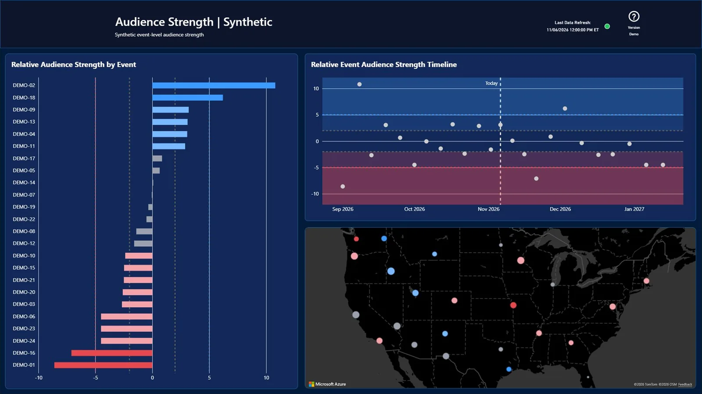
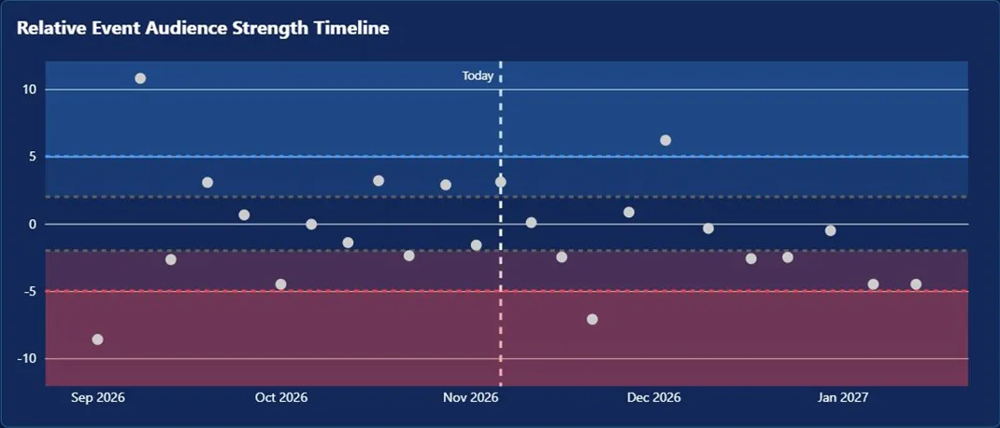

Audience Strength
Which upcoming events have stronger or weaker audiences than usual?
A partner scores ticket purchasers, and those scores are rolled up to a single relative score per event. Leadership needed a quick way to compare events side by side and see where each one sits on the calendar and the map.

What it shows
- Ranked comparison: every event sorted by relative audience strength, colored from very strong (blue) to very weak (red).
- Timeline: events plotted by date against shaded strength bands, with a Today marker separating past from upcoming events.
- Map: event locations colored by the same strength scale.
- Click to focus: selecting an event filters the timeline and map to it and dims the rest.
How it's built
- Threshold categories in DAX: five bands (very strong ≥ 5, strong ≥ 2, normal, weak ≤ −2, very weak ≤ −5) drive the colors on every visual.
- Banded timeline: reference bands and lines mark the thresholds, so it's clear how far an event is from "normal".
- Coordinated visuals: cross-filtering is set up so one click updates the timeline and map together.
- Tooltip page: hovering shows event details without cluttering the canvas.
